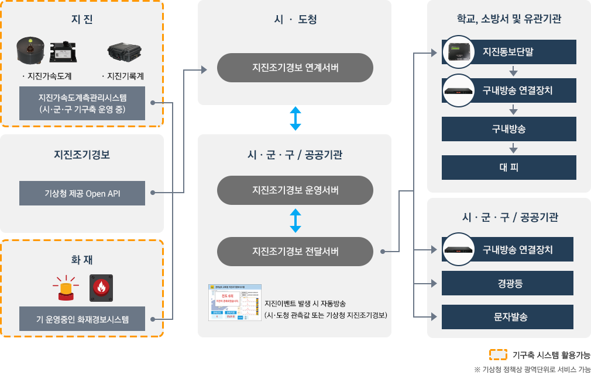
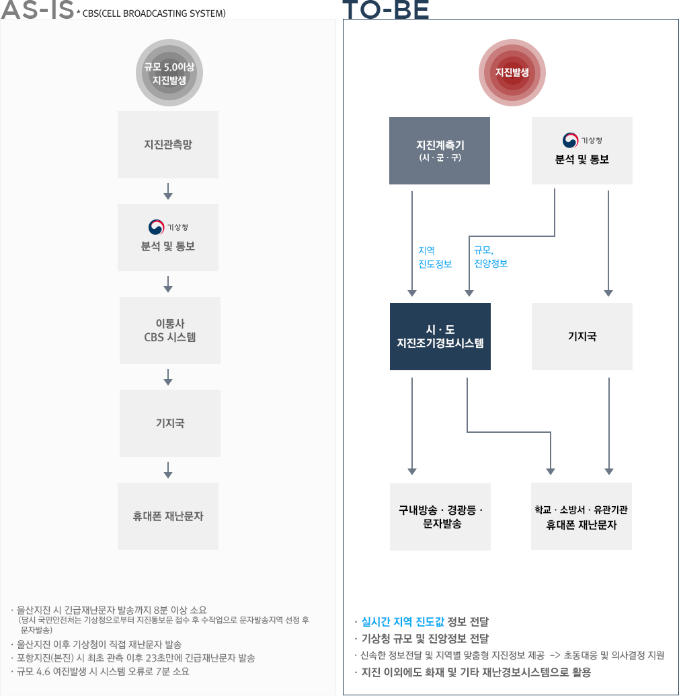
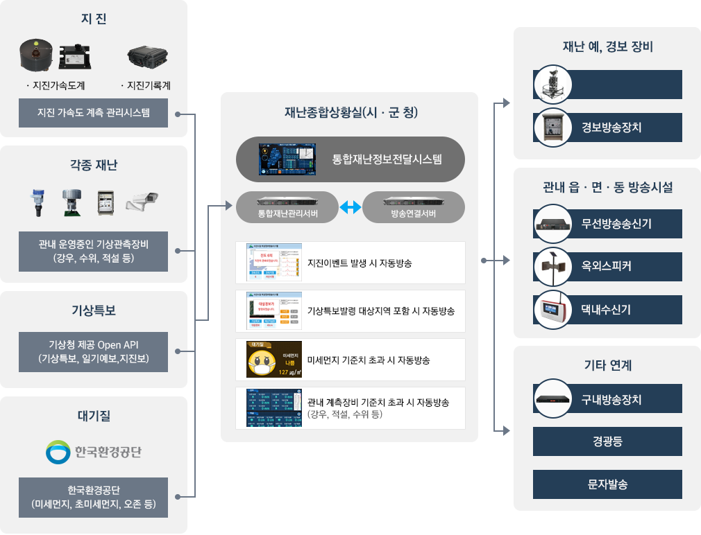
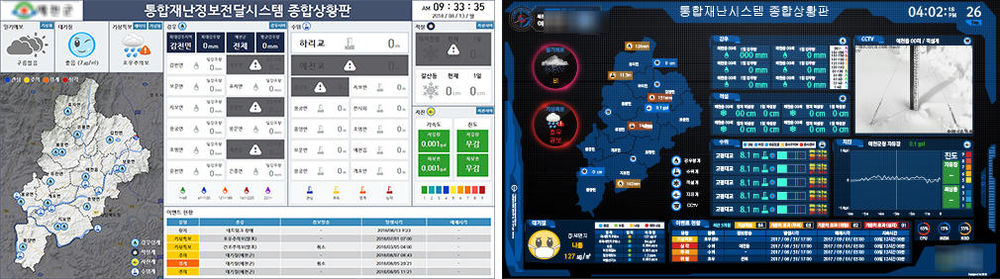

재난예경보
- 지진조기경보솔루션
- 통합재난정보전달솔루션
- 옥외경보시설
- 다중이용시설
- 예경보시스템
-
주요기능
- 기구축된 지진가속도계측시스템의 기준치 이상의 지진동감지시 경보방송 실시
- 기상청 지진조기경보를 수신하여 기준치 이상의 규모일시 경보방송 실시
- 관내 시ㆍ군ㆍ구 및 기타 유관기관과 연계되어 빠른 대응 가능
-
시스템 구성

-
개념 및 특장점

-
주요기능
- 관내 지진정보, 수위정보, 강우정보, 적설정보 연계 및 통합 관리
- 기상청 제공 Open API (기상특보, 일기예보, 지진조기경보) 연계를 통한 통합 관리
- 관내 미세먼지, 초미세먼지 정보 연계를 통합 통합 관리
-
시스템 구성

-
운영화면 예시

- 지진 정보
- 청사에 설치된 지진가속도계의 측정값 정보, 진도 및 경보기능
- 기상 정보
- 관내의 일기예보, 기상특보 정보
- 대기질 정보
- 미세먼지, 초미세먼지, 오존, 이산화질소, 일산화탄소, 아황산가스 등의 농도 및 상태정보
- 재난계측 정보
- 강우량계, 적설계, 수위계 CCTV 등 관내 운영 중인 계측정보 표출 및 관리기준치 초과 시 경보기능
- 이벤트 현황
- 과거 기상특보, 지진, 계측관리 기준치 초과 등의 정보
준비중입니다.
준비중입니다.
준비중입니다.